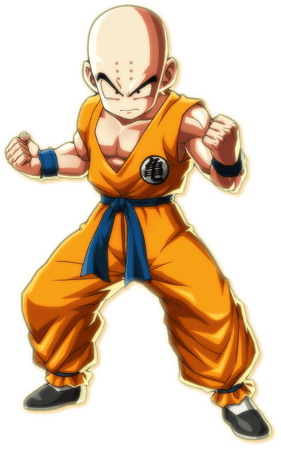
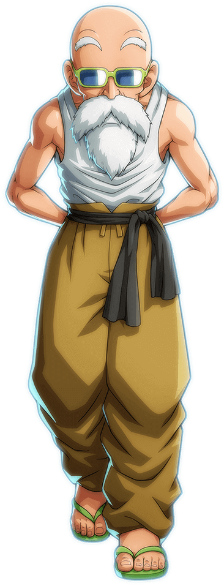
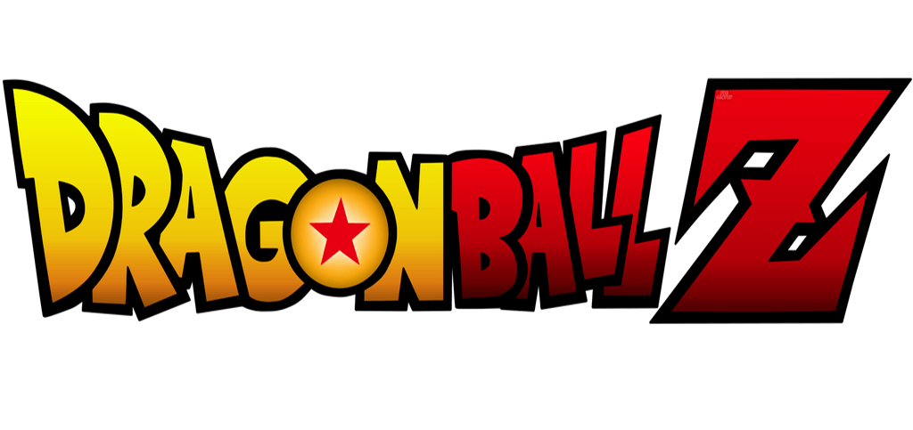
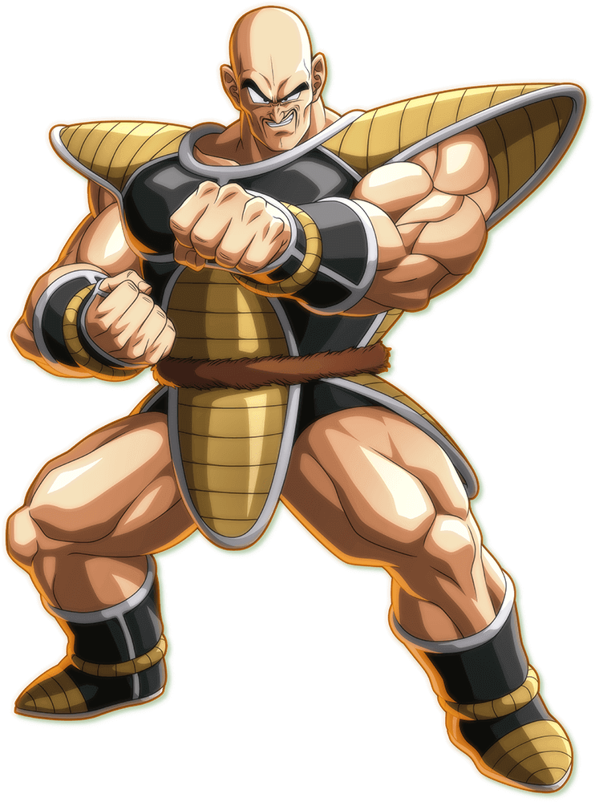
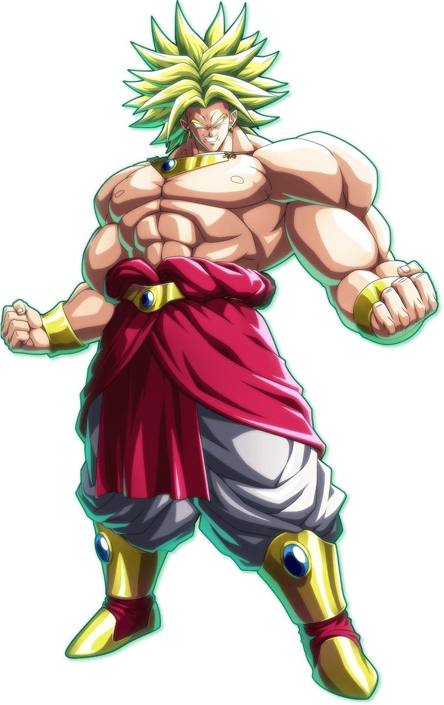
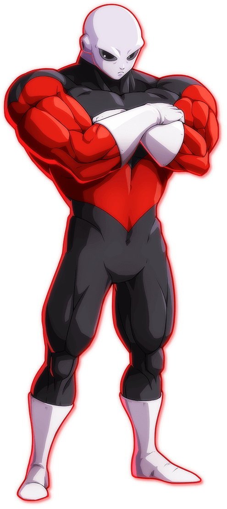
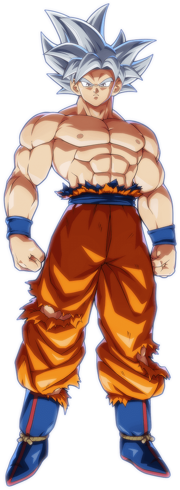

-

Goku
Born Kakarot, Goku is a Saiyan male originally sent to destroy Earth as a baby. However, a head injury alters his memory, ridding him of his initial destructive nature and allowing him to grow up to become Earth's greatest defenders.
-

Krillin
One of the most powerful and talented martial artists on Earth. Krillin is courageous and faithful. He had a brief rivalry with Goku when they first met and trained under Master Roshi, but they quickly became lifelong best friends.
-
Yamcha
A former desert bandit, Yamcha was once an enemy of Goku, but quickly reformed and became a friend and ally. Brave, boastful and dependable, Yamcha is a very talented martial artist and one of the most powerful humans on Earth.
-

Master Roshi
Master Roshi also known as the Turtle Hermit and God of Martial Arts, is a master of martial arts, who trained Gohan, Ox-King, Goku, Krillin, and Yamcha. He has a sister named Fortuneteller Baba. In his youth he was simply called Turtle.
-
Tien Shinhan
Tien Shinhan is a disciplined, reclusive and heavily devoted martial artist, and one of the strongest Earthlings.He was originally a student of the Crane School who desired revenge against Goku for defeating his mentor Mercenary Tao.
-
Piccolo
Piccolo Jr, usually just called Piccolo, is a Namekian and also the final child and reincarnation of King Piccolo, later becoming the reunification of the Nameless Namekian after fusing with Kami. He also fused with a Namekian named Nail.
-


Vegeta
Vegeta, recognized as Prince Vegeta is the prince of the fallen Saiyan race. Egotistical, and full of pride, Vegeta was once a ruthless killer and cold-blooded warrior, but later abandons his role in the Frieza Force, instead opting to remain and live on Earth.
-

Nappa
Nappa is a mid-class Saiyan warrior from Planet Vegeta, and Vegeta's partner in combat. Prior to the destruction of Planet Vegeta, Nappa was the general of the Saiyan Army and aid/partner to the young prince, Vegeta.
-
Captain Ginyu
Captain Ginyu is the strict but loyal captain of the elite mercenary platoon, the eponymous Ginyu Force. Ginyu is an honorable, yet merciless fighter who constantly strikes poses. He possesses the ability to swap bodies.
-

Super Saiyan Goku
When Frieza kills Krillin and critically injures Piccolo, Goku, in anger, taps into his inner power reserves and transforms into a Super Saiyan.The ability to become a Super Saiyan was once considered to be nothing but a legend.
-
Freeza
Frieza is the emperor of Universe 7, who controlled his own imperialist army and is feared for his ruthlessness and power. He is the descendant of Chilled, the second son of King Cold, the younger brother of Cooler.
-
Coolor
Cooler is the older brother of Frieza and the elder son of King Cold. Like his brother, he can push his body through transformations. Also, like Frieza, Cooler possesses a biomechanical incarnation, but this is gained from merging with the Big Gete Star.
-

Future Trunks
Future Trunks is son of Vegeta and Bulma from an alternate future. Trunks hails from an alternate timeline in which Future Androids 17 and 18 cause chaos. Trunks is trained by Future Gohan and becomes a gifted fighter and swordsman.
-

Super Saiyan Vegeta
Vegeta, out of sheer hopelessness and desperation in an unknown planet to destroy the meteor and save himself, finally becomes a Super Saiyan and is easily able to destroy the meteor coming towards the planet.
-
Android 16
Android 16 is Dr. Gero's sixteenth Android creation. He was initially designed to serve Gero's vendetta against Goku, who overthrew the Red Ribbon Army as a child but is later deemed unfit for activation.
-
Android 17
Android 17 is the twin brother of Android 18 and Dr. Gero's seventeenth android creation, designed to destroy Goku. Despite his interests not initially deviating from this expectation, Android 17 takes it upon himself to kill Dr. Gero.
-
Android 18
Android 18 is the twin sister of Android 17 and Dr. Gero's eighteenth android creation, designed destroy Goku. Eventually, Android 18 becomes a member of the Z Fighters, as well as the wife of Krillin and the mother of their daughter Marron.
-

Gohan (Teen)
Gohan is the elder son of Goku and his wife Chi-Chi, the older brother of Goten, the husband of Videl and father to Pan. He is named after Goku's adoptive grandfather, Gohan.Unlike his father, Gohan lacks a passion for fighting.
-
Cell
Cell is the ultimate creation of Dr. Gero, designed via cell recombination using the genetics of the greatest fighters, possessing numerous favorable genetic traits and special abilities from Goku, Vegeta, Piccolo, Frieza and King Cold.
-

Broly
Broly the latest of the Legendary Super Saiyans who appears every thousand years. Broly appears to be a quiet and gentle Saiyan until his personality is later dispelled as a charade caused by the suppression of his ring.
-
Gohan
Gohan is the elder son of Goku and his wife Chi-Chi, the older brother of Goten, the husband of Videl and father to Pan. He is named after Goku's adoptive grandfather, Gohan.Unlike his father, Gohan lacks a passion for fighting.
-
Videl
Videl is the daughter of Mr. Satan and Miguel, the wife of Gohan and the mother of Pan. In her spare time, Videl helps the police and fights crime in Satan City.Videl becomes very strong for a human, and enters the 25th World Tournament.
-
Majin Buu
The first form of Buu to appear on-screen, and the result of Kid Buu absorbing the Grand Supreme Kai.The result of Innocent Buu expelling all of the evil in his body, becoming pure good. He lacks any evil whatsoever and is a different life-form.
-
Gotenks
Gotenks is the immensely powerful fusion of Goten and Trunks successfully using the Fusion Dance. He likes to call himself, "The Hero of Justice" or "Grim Reaper of Justice". He has a quite cocky and rebellious personality.
-

Kid Buu
Kid Buu is the original, pure form of Majin Buu. Although he appears smaller than any other form, he is more dangerous than any other forms of Buu due to his full relentless evil and unpredictability with irrational and spontaneous throught process.
-
Janemba
Janemba power over dimensions is capable of transforming the entire universe into his image. He possesses great matter manipulation powers as well, able to pick up a club and alter its molecular structure, turning it into a sword.
-
Bardock
Bardock is a low-class Saiyan warrior, the husband of Gine, and the father of Raditz and Goku.He is an adept fighter and a devoted Saiyan Army soldier under the Frieza Force until he realizes his tyrannical boss plans to annihilate the Saiyan race.
-
Beerus
Beerus is the God of Destruction of Universe 7. He is accompanied by his martial arts teacher and attendant, Whis. Beerus' twin brother is Champa, the God of Destruction of Universe 6. Beerus is powerful, yet lazy and playful.
-

Goku SSB
Goku unlocks this form after training with Whis and Vegeta. Super Saiyan with the power of Super Saiyan God or simply called as Super Saiyan Blue. This form has balance of KI and Stamina in general which makes this better than Super Saiyan God.
-
Vegeta SSB
Vegeta unlocks this form after training with Whis and Goku. Super Saiyan with the power of Super Saiyan God or simply called as Super Saiyan Blue. This form has balance of KI and Stamina in general which makes this better than Super Saiyan God.
-
Hit
Hit, renowned as "Never-Miss Hit" and as the "Legendary Hitman" is the legendary assassin of Universe 6. In addition, he also later on becomes the leader for Team Universe 6. He is a 1000 years old and has special ability to skip time.
-
Goku Black SSR
Goku Black, usually referred to as Black. His true identity is Zamasu from the unaltered main timeline within Universe 10. With his God KI and Goku's saiyan body he unlocks the transformation of Super Saiyan Rose.
-
Zamasu Fused
Zamasu is a former North Kai and Supreme Kai apprentice serving his former master Gowasu of Universe 10 from an alternate timeline. With the Potara Earrings of the Gowasu, Zamasu fuses with Goku Black to form fused Zamasu.
-
Vegito SSB
Vegito, is the result of the fusion between Goku and Vegeta by the use of the Potara Earrings. Vegito is a mixture of both Goku and Vegeta's characteristics and the abilities of Goku and Vegeta with his unique moveset.
-
Kefla
Kefla is the Potara fusion of Kale and Caulifla.Despite being a fusion of Caulifla and Kale, Kefla's personality is seemingly only identical to Caulifla's, likely because Kale is shy and subservient to Caulifla in general.
-

Jiren
Jiren, is the most powerful member of the Pride Troopers. An extraordinary powerful being, Jiren is considered to be one of the strongest mortals in all of the multiverse, outclassing even the Gods of Destruction.
-

Goku Ultra Instinct
Ultra Instinct is an ultimate technique that separates the consciousness from the body, allowing it to move and fight independent of thoughts and emotions. It is an extraordinarily difficult technique to master, even for gods.
-

Broly (Super)
Broly is the son of Paragus. He is the latest of the Legendary Super Saiyans, a demonic Saiyan warrior who appears every thousand years. Because of his extreme power, he was stranded on the planet Vampa by King Vegeta.
-

Gogeta SSB
Gogeta is the resulting fusion of Goku and Vegeta, when they perform the Fusion Dance properly. His voice is a dual voice containing both Goku's and Vegeta's voices. He has ability of both Goku and Vegeta and also has his unique moves.
-

Goku GT
Goku (GT) is an alternate version of Goku who appears in the Dragon Ball GT series.In the GT he is turned back into a kid after a wish from Dark Star Dragon Balls. He also has the ability to transform into Super Saiyan 4.
-
Baby
Baby is the last survivor of the Tuffle race who is rebuilt by his creation, Dr. Myuu as a Machine Mutant to exterminate the Saiyans and restore his kind by controlling everyone on Earth. He takes over Vegeta's body to further his ambitions.
-
Gogeta Super Saiyan 4
Gogeta Super Saiyan 4 is the resulting fusion of Goku and Vegeta in Super Saiyan 4 transformation, when they perform the Fusion Dance properly. This fusion lasts shorter than normal because of the high KI usage of Super Saiyan 4.